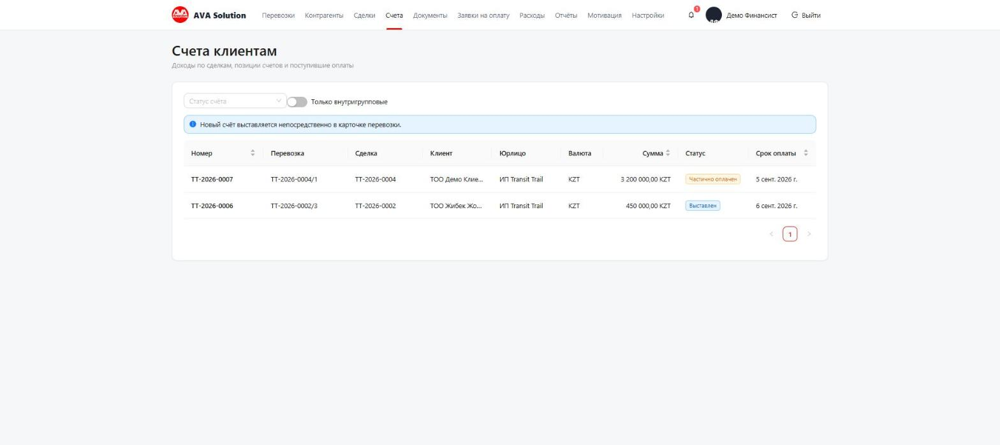
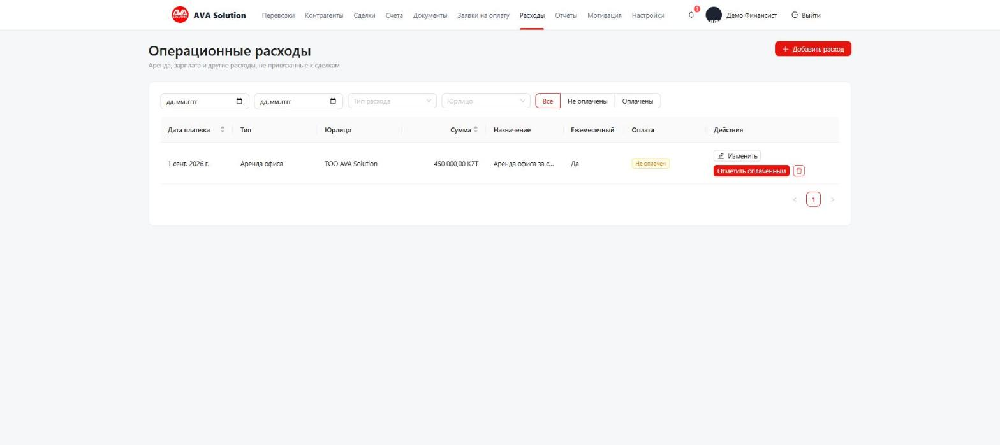

Инструкция для финансиста
Вы фиксируете оплаты клиентов и субподрядчикам, ведёте операционные расходы компании и следите за отчётами: кассовым календарём, дебиторкой и кредиторкой.
Дашборд
Раздел «Отчёты» → «Дашборд»: активные перевозки, воронка сделок за период, маржа в разрезе юрлиц. Период выбирается вверху, есть выгрузка в Excel.

Счета клиентам и оплаты
Раздел «Счета» — обзор всех выставленных счетов (сам счёт создаётся и редактируется в карточке перевозки, не отдельно). Статус пересчитывается сам: Выставлен → Частично оплачен → Оплачен, а «Просрочен» — это подсветка, а не отдельный статус.

Заявки на оплату субподрядчикам
Логисты создают заявки по перевозкам, вы (вместе с руководителем) согласуете их и отмечаете оплаченными. При оплате в валюте можно указать фактический курс — это уточнит курсовую разницу в марже.
Операционные расходы
Раздел «Расходы» — аренда, зарплата и всё остальное, что не привязано к конкретной сделке. Согласования не требуется — только плановая дата и отметка «оплачено». Если поставить «Ежемесячный» — следующая запись на месяц вперёд создастся сама.

Кассовый календарь, дебиторка и кредиторка
Вкладки внутри «Отчётов»: кассовый календарь показывает ожидаемые поступления и платежи по дням (включая операционные расходы), «Дебиторка» — кто должен вам, «Кредиторка» — кому должны вы.
Настройки (вместе с администратором)
Раздел «Настройки» → «Валюты и курсы» (курс НБ РК подтягивается автоматически раз в сутки, можно ввести вручную) и «Юрлица» → история ставок НДС и налога с дохода по датам.